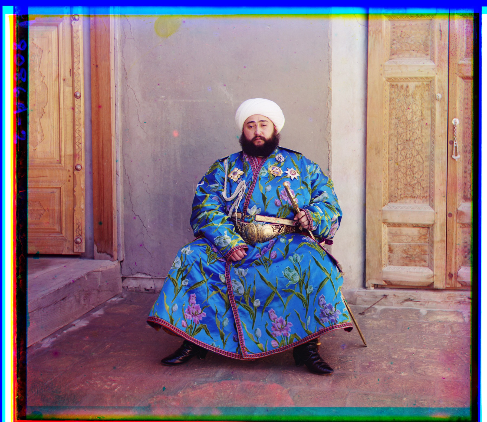
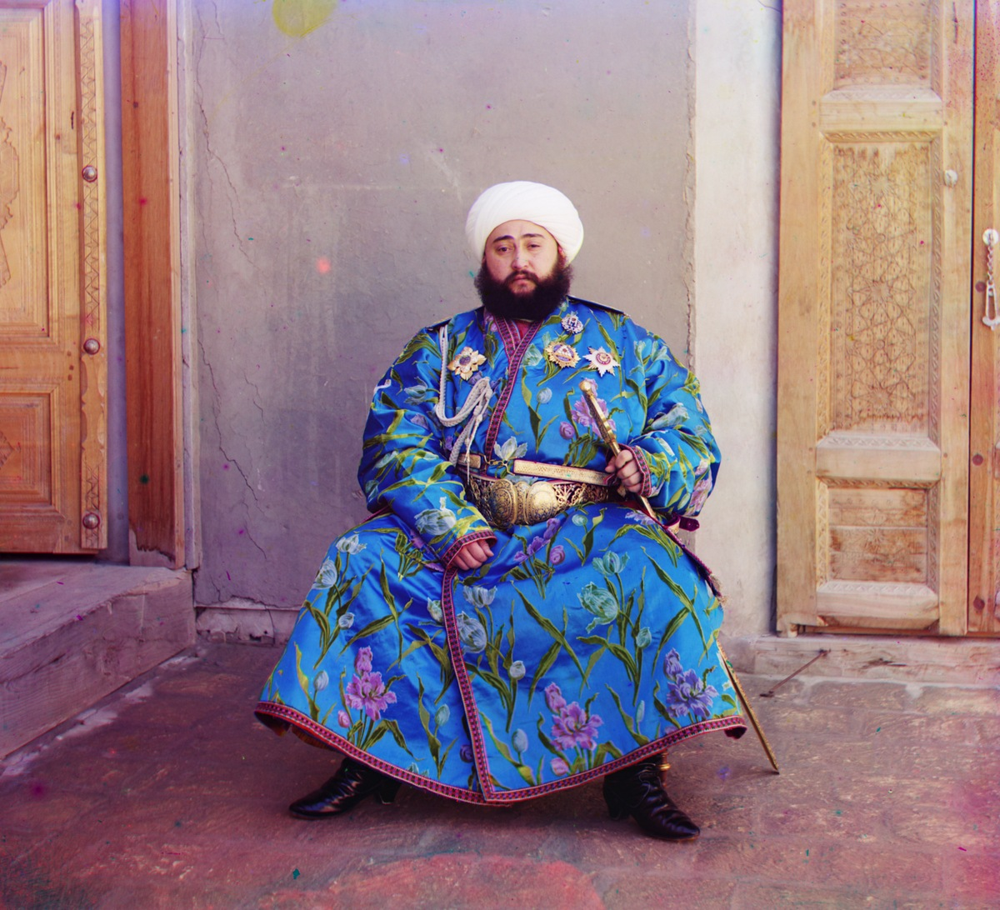
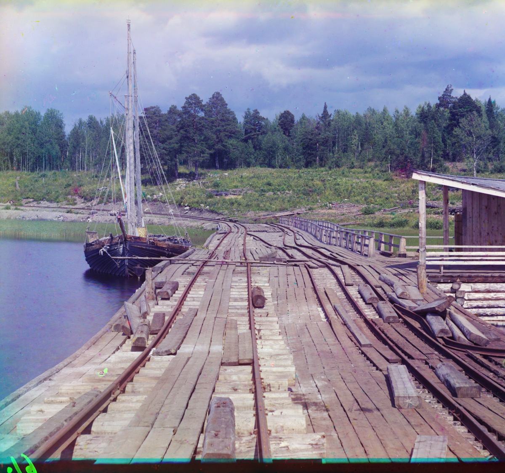
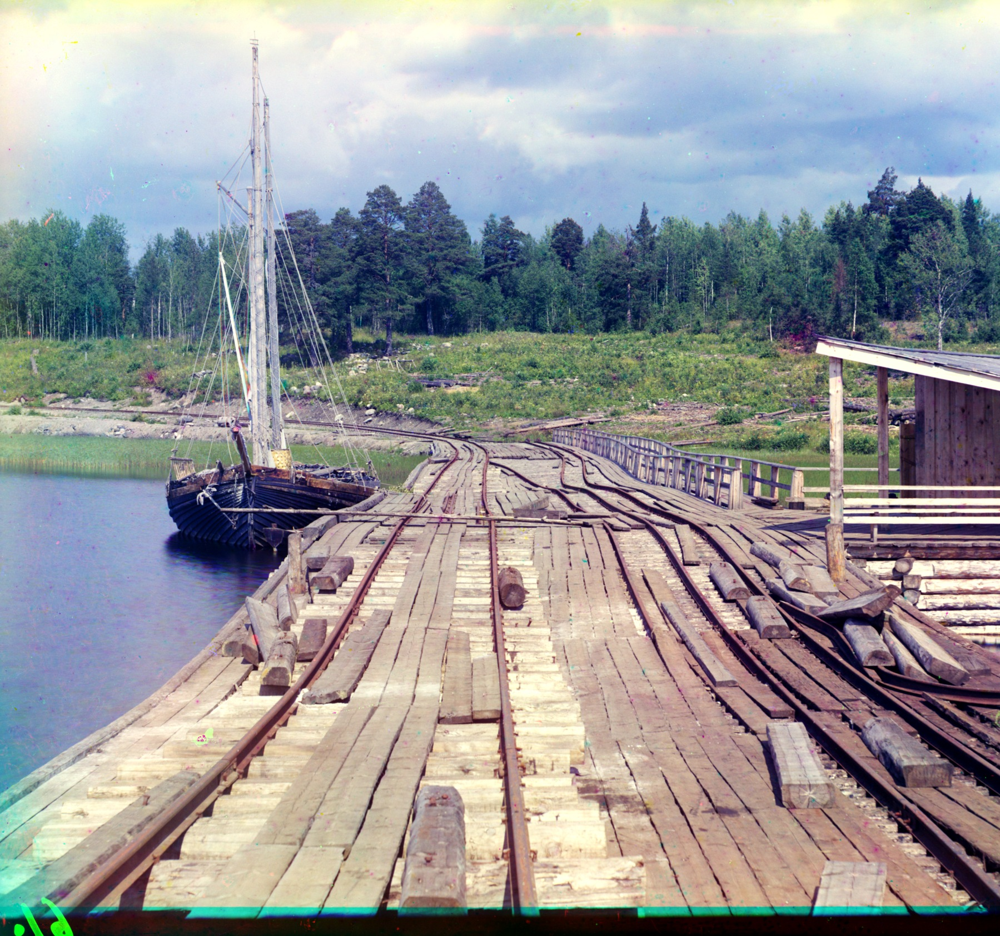
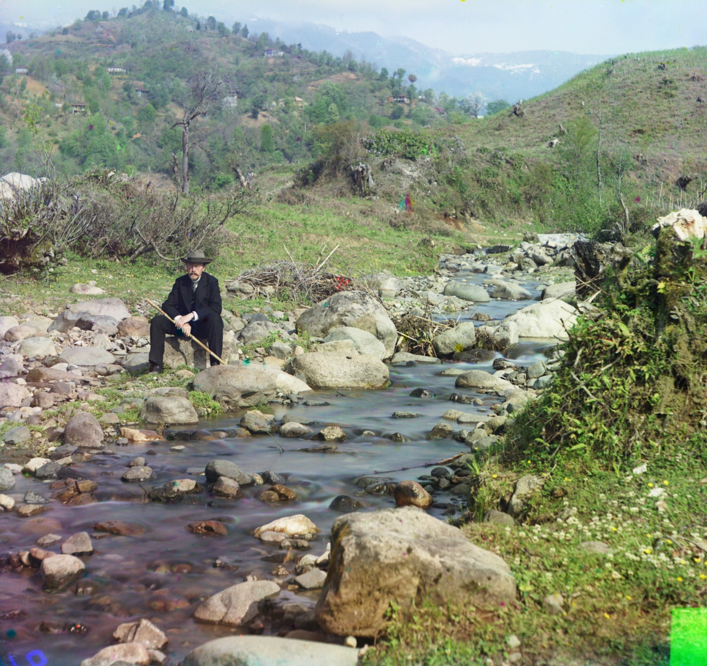
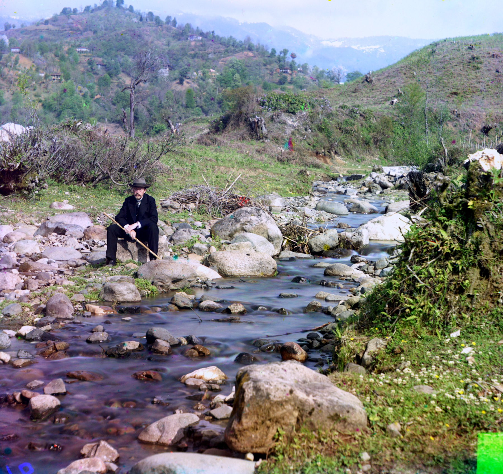
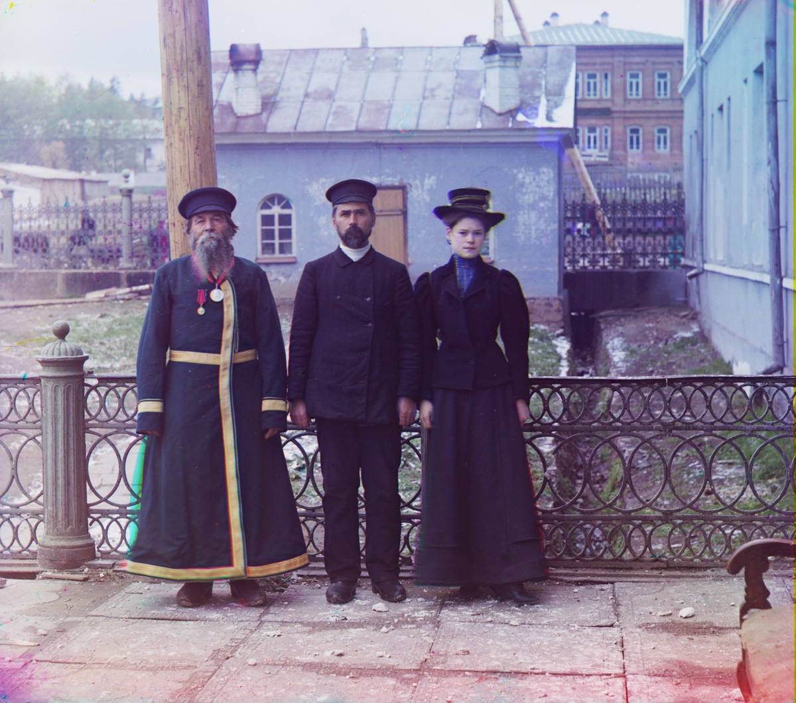
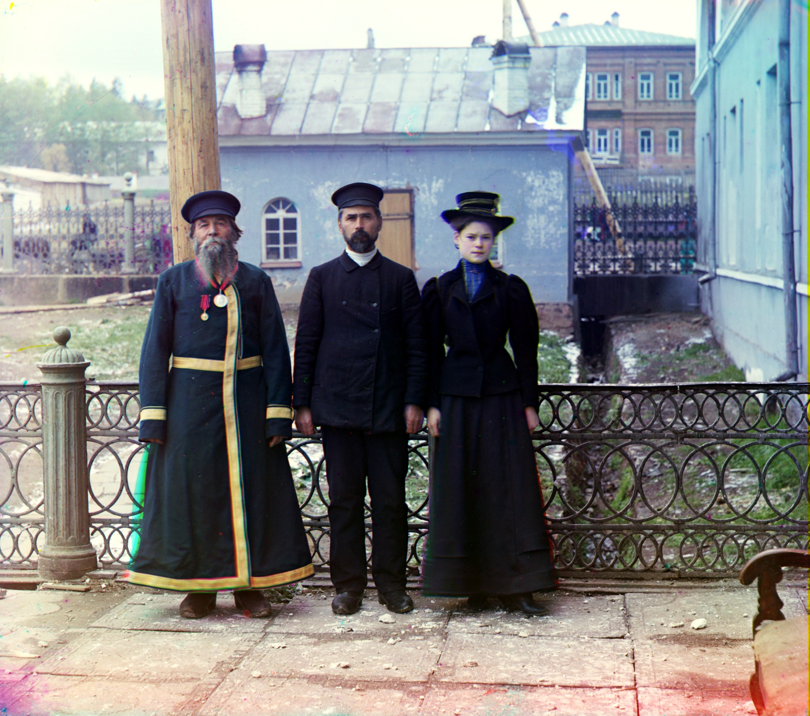
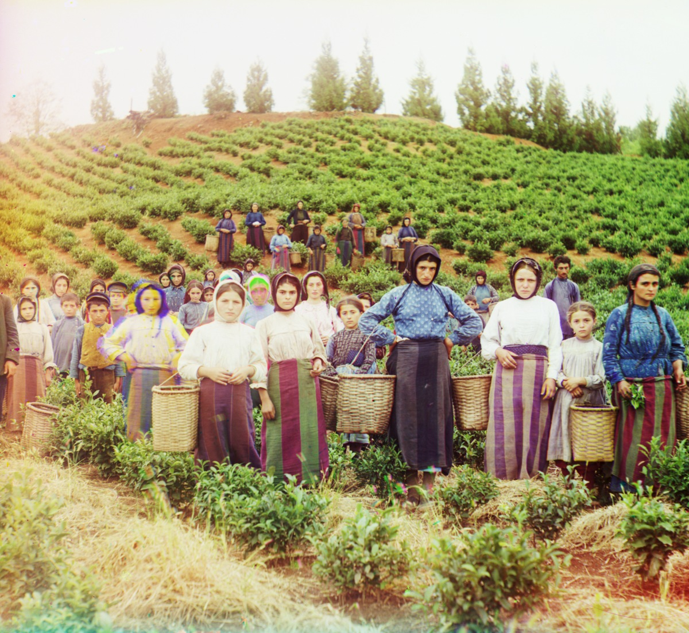
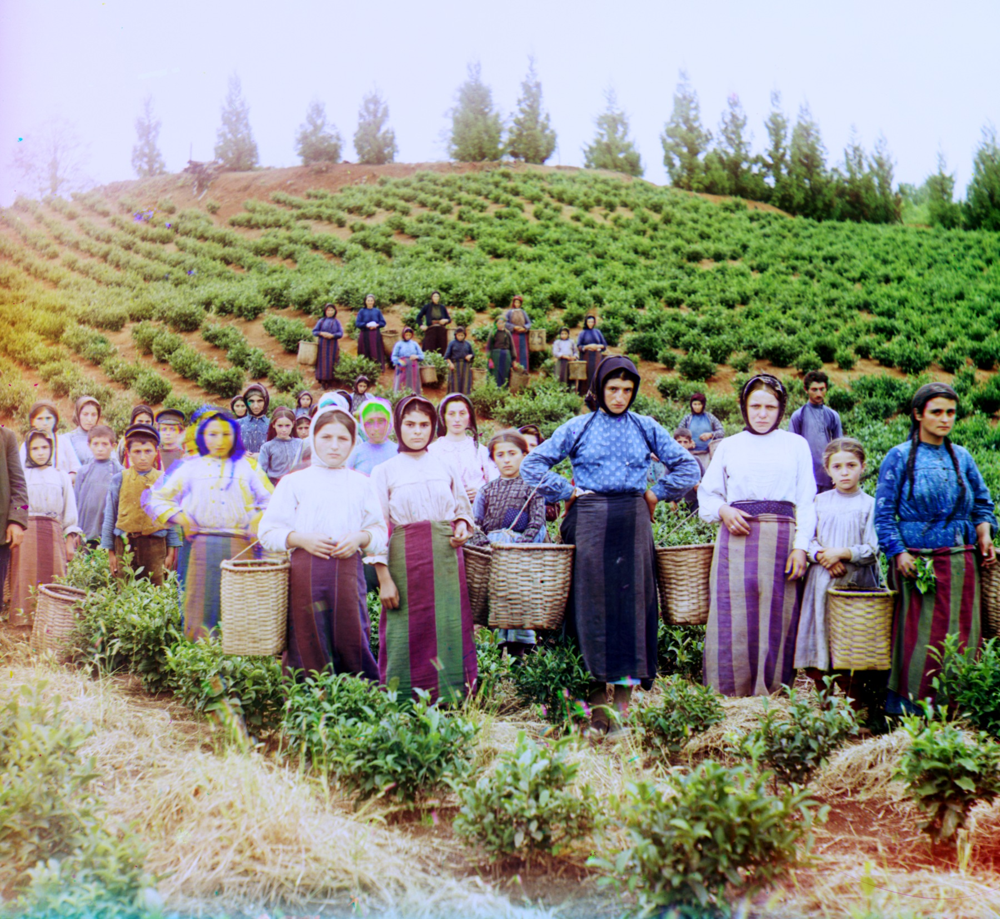

Project overview
Each source scan contains three monochrome exposures in vertical B / G / R order. Because the camera and plates moved between exposures, direct stacking produces colored ghosts. The reconstruction estimates two translations relative to blue, forms an RGB image only from true overlap pixels, and applies the same cleanup rules to every image.
1 Single-Scale Alignment
For the three small JPEGs, every integer shift in [-15, 15]^2 is evaluated on the common interior region. Blue is fixed; green and red are searched independently. Circular wrap-around is excluded from scoring so pixels moved off one edge cannot reappear on the other.
1.1 L2 and NCC objectives
L2 / RMSE
Lower is better. The implementation standardizes both overlap patches before RMSE, preventing a global exposure scale from overwhelming structure. It remains sensitive to local nonlinear brightness changes.
Normalized cross-correlation
Higher is better. Mean subtraction and normalization make NCC more stable across differently exposed color plates. It is therefore the primary single-scale similarity signal.
1.2 Measured JPEG baseline
The table reports the selected displacement and both audit metrics on exactly the same overlap. The paired images compare the exhaustive single-scale result with the final pyramid-and-cleanup output.
| JPEG | G → B | R → B | NCC G / R | normalized L2 G / R |
|---|---|---|---|---|
| Loading baseline metrics… | ||||
2 Multi-Scale Alignment
A full-resolution exhaustive search is too expensive for the large TIFF plates and may require displacements far outside the JPEG window. The method therefore evolves from a local metric search into a coarse-to-fine, edge-aware registration pipeline.
2.1 Algorithm evolution and final flow
From L2 to NCC
Raw L2 directly penalizes filter-dependent exposure differences. Standardization makes it a useful error audit, while NCC naturally compares pattern agreement after removing mean and scale.
From flat search to pyramid
At each level, the previous displacement is doubled and only a small neighborhood is searched: d_l = 2 d_(l-1) + delta_l. This replaces one huge search with several cheap local searches.
From intensity to edges
Central-difference edge magnitude survives many cross-filter brightness changes. The integer search blends 0.70 × intensity NCC + 0.30 × edge NCC.
Phase initialization
A Hann-windowed FFT cross-power spectrum on a 4× edge thumbnail supplies a global shift seed. Local search then removes thumbnail quantization without image-specific tuning.
From integer shift to bounded edge-affine ECC
After correcting the inverse-warp sign, intensity ECC estimates sub-pixel translation. A second ECC pass aligns clipped Scharr edges and may correct tiny scale, rotation, and shear differences. It is accepted only when the center score rises by at least 0.01 and strict deformation limits pass.
2.2 L2, NCC, edge NCC, and phase correlation
| signal | optimization | strength | limitation / role |
|---|---|---|---|
| L2 / normalized RMSE | minimize standardized pixel error | Simple and directly interpretable | More sensitive to nonlinear cross-filter brightness; retained as a lower-is-better audit. |
| Intensity NCC | maximize normalized dot product | Invariant to mean and global scale | Primary similarity metric, but smooth regions can create broad or false peaks. |
| Edge NCC | maximize correlation of edge magnitudes | Emphasizes shared geometry | Blended with intensity NCC so noise and weak edges do not dominate. |
| Bounded edge-affine ECC | maximize clipped Scharr-edge correlation | Removes residual color fringes from small plate scale, rotation, or shear differences | Final optional stage; accepted only with a clear center-score gain, singular values in [0.985, 1.015], limited shear, and limited corner deformation. |
| Phase correlation | maximize inverse-FFT cross-power peak | Fast global translation estimate | Used only for initialization; a spatial local search validates and refines it. |
2.3 All 14 course samples: offsets and metrics
Positive dy moves a plate downward; positive dx moves it right. NCC is higher-is-better; normalized L2/RMSE is lower-is-better.
| image | G → B | R → B | NCC G / R | L2 G / R | mean NCC / L2 | refinement G / R | crop (t,b,l,r) |
|---|---|---|---|---|---|---|---|
| Loading results… | |||||||
three_generations and harvesters. It deliberately cannot erase genuine subject motion between exposures; the strict quality and deformation gates prevent that motion from bending the whole photograph.2.4 Additional Library of Congress examples
Three self-selected original vertical TIFF resources are processed with the same pipeline. Each result links to its Library of Congress item page and exact raw glass-negative file.
| LOC item | title | G → B | R → B | NCC G / R | L2 G / R | mean NCC / L2 |
|---|---|---|---|---|---|---|
| Loading LOC examples… | ||||||
3 Automatic Cropping (Bells & Whistles)
The valid B/G/R intersection is computed from the measured shifts. Rows and columns are then rejected when they are clipped, low-information, or unusually inconsistent across channels. A consecutive-good-run test prevents a single clean strip from ending the crop too early.


left: aligned scan with margins · right: common photographic region
4 Automatic Contrasting (Bells & Whistles)
After border removal, each channel is mapped from its 1st and 99th percentiles into [0, 1]. Robust percentiles recover shadows and highlights without allowing a border, dust speck, or saturated pixel to control the range.


left: aligned/cropped · right: percentile contrast plus final color cleanup
5 Automatic White Balance (Bells & Whistles)
Restrained gray-world balancing moves channel means toward their common mean after contrast normalization. Gains are clipped to [0.85, 1.18] to avoid noise amplification and implausible neutralization; a mild gamma of 0.96 follows.


left: aligned/cropped · right: final balanced image
6 Better Color Mapping (Bells & Whistles)
Alignment remains in source B/G/R order, but the stack is explicitly reordered to display R/G/B before JPEG encoding. Percentile normalization and bounded gray-world gains then supply one deterministic display mapping for all scenes.


left: aligned/cropped display RGB · right: final mapped rendering
7 Better Features (Bells & Whistles)
The final alignment combines intensity structure, edge geometry, phase correlation, corrected-sign sub-pixel ECC, and a quality-gated affine residual. This is especially useful when filter exposures differ or scanned glass plates have a small scale or rotation mismatch.


offsets and NCC/L2 evidence are reported in section 2.3
Appendix: supporting comparisons
These pairs isolate alignment/crop from the final contrast, gray-world balance, and gamma stages.